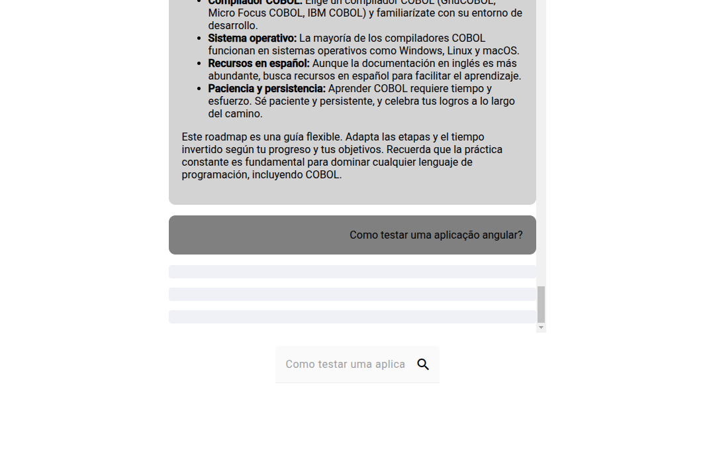

Projetos

Monitor de energia
Projeto realizado para a disciplina de sistemas embarcados. O objetivo dele é capturar os dados do consumo de energia e exibir em um gráfico, onde o usuário pode escolher qual período de tempo ele quer visualizar as informações.

CRUD de uma loja
Projeto para praticar meus conhecimentos com o framework django realizando as operações básicas de uma API.

Integração com IA Generativa
Projeto que integra uma api django com a ia generativa do google, a gemini.